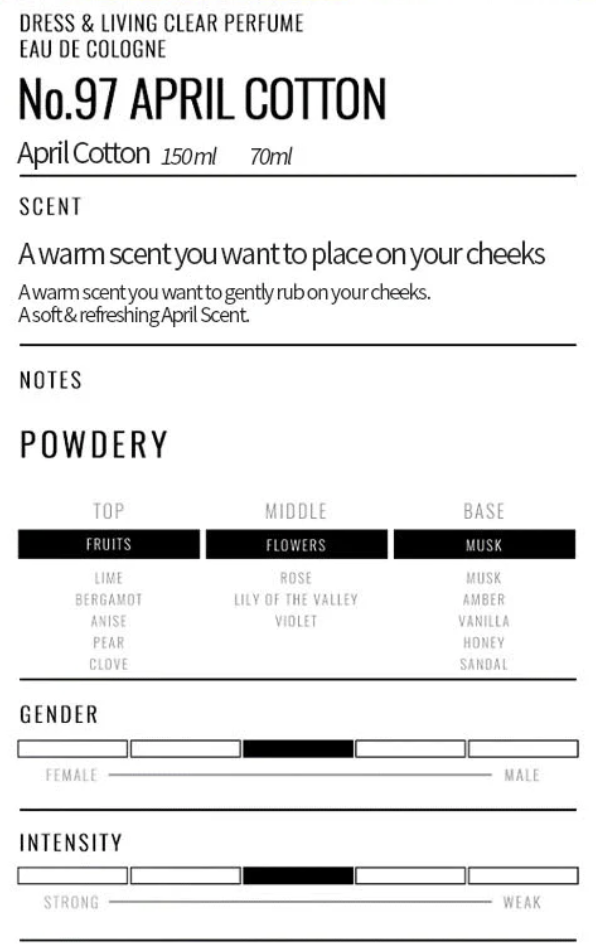

*✧·˚ : * 향수 진심녀는 무슨 향수 써요? ☆ﾟ.*･｡ﾟ

April cotton
April cotton은 많이 아실텐데요..., 한 때 BTS 정국님이 쓰시는 향수로 붐이 왔다죠...
저는 옷에 맞게, 분위기에 맞게 향수를 뿌리는 것을 좋아하는데요..!
근데 거의 네츄럴하게 휘뚜루 마뚜루로 입는 복장이 많은 저는 아주 애용합니당( •-•)💕
향도 엄청 부담스럽지 않은 파우더리한 비누향, 뽀송뽀송한 섬유유연제향이라 좋아요(´•⌔•`)
Dylan blue
Dylan blue는 제가 학교에서 처음 만난 향수에요!
베르사체에서 저희 학교 학생들에게 샘플 향수를 주는 행사를 작게 했었을 때 처음 맡아본 향입니다(*´∪`)
첫 향은 보편적인 여성 향수와 별반 다를 게 없어서 그냥 그랬는데,
시간이 지나고 맡아보니 잔향이 정~~~~말 제 스타일이었다...꜆₍ᐢ˶•ᴗ•˶ᐢ₎꜆
따스하면서도 매력적인 성공한 여성의 향이 나요 (정말루,,)
잔향은 그런 차분함 사이에서 느껴지는 왜인지 모를 포근함이 느껴져요ദ്ദി
어른스러워 보이고 싶을 때나, 중요한 자리에서 무게를 잡고 싶을 때 쓰면 좋을 것 같아요(๑'ᵕ'๑)⸝*
White cotton
아쿠아사봉! 비누향수로 유명한 거!! 알고 계셨나요!!
정말,,, 여름 포근 몽글 비누향수 맛집입니다˶•⩊•˶
이름처럼 아쿠아의 쿨함과 몽글몽글함이 동시에 있어서 뽀송함이 느껴져요ʕ・ᵌ・ʔ
저는 시트러스향을 별로 좋아하지 않는 줄 알았는데 처음에 딱 뿌렸을 때 올라오는 레몬 과즙향이 더 시원하게 만드는 것 같아요(*ᵔᢦᵔ*)
제가 처음 제 용돈으로 사봤던,, 향수인지라 가성비 좋고요! 제 나름의 추억도 서려있는 향수랍니다~?
패키지 안에 있는 구슬이 서로 부딫히며 내는 소리도 좋아요( ˶ ᷇ 𖥦 ᷆ ˵ )
Sunset pink
선셋 핑크는 제가 2024년 겨울에 도쿄여행 중 만난 향이에요(ง ᵕᴗᵕ)ว
그래서인지 향을 맡으면 괜히 일본의 느낌이 난답니다˶•⩊•˶
다채롭게 섞인 과일향과 그 속에 여성스러움이 코 끝을 살짝 치는 느낌이에요(๑˃̵ᴗ˂̵)و
오늘은 느낌있는 소녀가 되고 싶다! 할 때 뿌리면 너무 좋을 향수,,
제 스타일이 아닐까봐 사진처럼 8ml를 샀는데 또 사러 일본 가야겠어요( ˶ ᷇ 𖥦 ᷆ ˵ )
(이 핑계로 도쿄 시부야 한 번 더 가기)